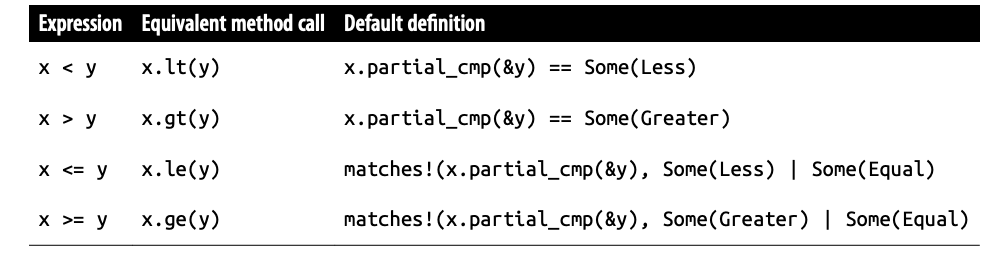

【Rust】运算符重载
我们可以为自定义的类型实现加减乘除操作，只要实现标准库的一些 Trait，这称之为运算符重载。下图是可以重载的运算符和需要对应实现的 Trait 列表：

算数和位运算符
在 Rust 中，表达式 a + b 实际上是 a.add(b) 的简写，调用 std::ops::Add 的方法，Rust 标准库数值类型都实现了这个 Trait。所有如果我们要实现类型之间的算数运算，只需要为这个类型实现相应的 Trait 即可。
假设我们需要为 num 中的 Complex<T> 实现 + 运算符：
1 | pub struct Complex<T> { |
我们之前说过可以为一类类型添加方法，这样的话不至于为 Complex<i32> 和 Complex<u64> 都添加 + 运算符：
1 |
|
虽然 Rust 不赞成支持混合类型的操作，但我们可以实现，这里要求 L 必须能和 R 实现加法操作：
1 | impl<L, R> Add<Complex<R>> for Complex<L> |
一元操作符
Rust 有两个一元操作符 - 和 !，Rust 的所有带符号数字类型都实现了 std::ops::Neg，用于一元负数运算符 -。整数类型和 bool 实现 std::ops::Not，用于一元补码运算符 !。 ! 可以用于 bool 值也可以用于整数的按位取反。
std::ops::Neg 和 std::ops::Not 的定义如下：
1 | trait Neg { |
我们来实现对复数 Complex<T> 的 - 运算：
1 | use std::ops::Neg; |
二元运算符
所有 Rust 的数值类型都实现了算数运算符，整数和 bool 类型实现了位运算符。所有这些 Trait 都有相同的形式，^ 运算符对应的 std::ops::BitXor 如下图所示：
1 | pub trait BitXor<Rhs = Self> { |
复合赋值运算符
复合赋值表达式类似于 x += y 或 x &= y：它接受两个操作数，对它们执行一些操作，如加法或按位与，并将结果存储回左操作数。在 Rust 中，复合赋值表达式的值始终是 ()，而不是存储的值。
许多语言都有这样的运算符，通常将它们定义为 x = x + y 或 x = x & y 等表达式的简写，但是 Rust 没有采用这种方法。相反，x += y 是方法调用 x.add_assign(y) 的简写，其中 add_assign 是 std::ops::AddAssign 的唯一方法：
1 | pub trait AddAssign<Rhs = Self> { |
Rust 的所有数字类型都实现了算术复合赋值运算符，Rust 的整数类型和 bool 实现了按位复合赋值运算符。我们来看一个对 Complex<T> 的假发复合赋值运算符：
1 | use std::ops::AddAssign; |
复合赋值运算符的内置Trait完全不同于相应二元运算符的内置Trait。实现 std::ops::Add 不会自动实现 std::ops::AddAssign。如果你想让 Rust 允许你的类型作为 += 运算符的左操作数，你必须自己实现 AddAssign。
相等比较
Rust 的相等运算符 == 和 != 是调用 std::cmp::PartialEq 的 eq 和 ne 方法，这个 trait 的定义如下：
1 | trait PartialEq<Rhs = Self> |
因为 ne 有个默认实现，我们只需要实现 eq 方法，这里有个为 Complex<T> 的实现：
1 | impl<T: PartialEq> PartialEq for Complex<T> { |
PartialEq 的实现几乎总是如出一辙，每次都显示写出来显得很无聊，所以 Rust 经常会为我们自动派生这个 Trait 的实现：
1 |
|
Rust 自动生成的实现本质上与我们的手写代码相同，依次比较类型的每个字段或元素，Rust 也可以为枚举类型派生 PartialEq 实现。自然地，该类型持有的每个值（或者在枚举的情况下可能持有）必须自己实现 PartialEq。
这里我们需要着重注意的是，这与算数运算符不同，eq 获取的是值的引用，这意味着比较 String，Vec 或者 HashMap 不会转移所有权：
1 | let s = "d\x6fv\x65t\x61i\x6c".to_string(); |
我们再来看看 Rhs: ?Sized 的约定，之前从未见过。这放宽了 Rust 通常要求类型参数必须是 Sized 类型的要求，让我们可以编写像 PartialEq<str> 或 PartialEq<[T]> 这样的 Trait。eq 和 ne 方法采用 &Rhs 类型的参数，将某些东西与 &str 或 &[T] 进行比较是完全合理的。由于 str 实现了 PartialEq<str>，以下断言是等价的：
1 | assert!("ungula" != "ungulate"); |
在这里，Self 和 Rhs 都将是 unsized 类型 str，使得 ne 的 Self 和 rhs 参数都是 &str 值。为什么 PartialEq? 叫做部分相等，因为从数学定义上来说，等价关系应该满足三个要求，对于任何值 x 和 y：
-
如果
x == y那么y == x； -
如果
x == y，y == x那么x == z； -
x == x永远成立；
虽然最后一个足够简单，但最后一个正是出问题的地方。Rust 的 f32 和 f64 是 IEEE 标准浮点值，像 0.0 / 0.0 以及其他没有适当值的表达式必须产生 NaN，而且 NaN 不等于任何值包括自身：
1 | assert!(f64::is_nan(0.0 / 0.0)); |
因此，虽然 Rust 的 == 运算符满足等价关系的前两个要求，但在 IEEE 浮点值上使用时显然不满足第三个要求，这称为部分等价关系。
如果你希望通用代码需要完全等价关系，则可以改为使用 std::cmp::Eq 作为边界，它表示完全等价关系：如果类型实现 Eq，则 x == x 对于该类型的每个值 x 都必须为真。在实践中，几乎所有实现 PartialEq 的类型也应该实现 Eq； f32 和 f64 是标准库中唯一属于 PartialEq 但不是 Eq 的类型。
标准库定义 Eq 是 PartialEq 的扩展，但是没有添加方法：
1 | trait Eq: PartialEq<Self> {} |
如果你的类型实现了 PartialEq 也希望是 Eq，那么必须显示实现 Eq，即使不用实现任何新的函数：
1 | impl<T: Eq> Eq for Complex<T> {} |
更简单的是我们可以使用派生 Eq 来实现：
1 |
|
泛型类型的派生实现可能取决于类型参数，使用派生属性，Complex<i32> 将实现 Eq，因为 i32 可以，但是Complex<f32> 只会实现 PartialEq，因为 f32 没有实现 Eq。当自己实现 std::cmp::PartialEq 时，Rust 无法检查你的 eq 和 ne 是完全相等还是部分相等。
有序比较
Rust 在 PartialOrd 中定义了 < > <= >= 的逻辑：
1 | pub trait PartialOrd<Rhs = Self>: PartialEq<Rhs> |
这个 Trait 中唯一需要实现的是 partial_cmp 方法，根据它的返回结果，就确定了比较结果：
1 | enum Ordering { |
但是如果 partial_cmp 返回 None，这意味着 self 和 other 相对于彼此是无序的：既不大于另一个，也不相等，在 Rust 中，只有 NaN 之间的比较才会有这样的结果。
像其他二元运算符一样，比较左右两种类型的值，左值必须实现 PartialOrd<Right>。 像 x < y 或 x >= y 这样的表达式是下面一些方法的简写：

如果想始终确定两个值得大小关系，那么就需要使用更严格的 std::cmp::Ord：
1 | pub trait Ord: Eq + PartialOrd<Self> { |
这里的 cmp 方法总是返回 Odering，说明两个值总是有顺序的，几乎所有实现 PartialOrd 的类型也实现了 Ord，除了 f32 和 f64。
Index 和 IndexMut
索引运算符 [] 也是可以重载的，例如，a[i] 实际上是 *a.index(i)，如果这个表达式赋值给可变引用那家么实际上调用的是 *a.index_mut(i)，这俩方法分别代表的是std::ops::Index 和 std::ops::IndexMut，它们的实际定义如下：
1 | pub trait Index<Idx> |
可以使用单个 usize 来索引切片，引用单个元素，因为切片实现 Index<usize>。但也可以可以使用像 a[i..j] 这样的表达式来引用子切片，因为它们也实现了 Index<Range<usize>>，这个表达式是简写为了：
1 | *a.index(std::ops::Range { start: i, end: j }) |
std::collections::HashMap 和 std::collections::BTreeMap 都实现了 Index<&str>。
所以我们可以这样使用：
1 |
|
从定义可以看出 IndexMut 扩展了 Index 并且增加了 index_mut 方法。当索引表达式出现在必要的上下文中时，Rust 会自动选择 index_mut。例如，假设我们编写以下代码：
1 | let mut desserts = |
IndexMut 的一个限制是，根据设计，它必须返回对某个值的可变引用。这就是为什么你不能使用像 m["十"] = 10; 这样的表达式的原因。因为向 HashMap 中插入一个值：该表需要首先为“十”创建一个 entry，并使用一些默认值，然后返回一个可变引用，但并非所有类型都具有简单的默认值，而且这里创建一个默认值并且立马丢掉，然后使用新值覆盖。
实现一个二维数组示例，存储图片的像素：
1 |
|
其他运算符
并非所有的运算符都可以重载，例如，用于错误检测的 ?，逻辑运算符 && 和 ||，范围运算符 .. 和 ..=，借用运算符 & 和赋值运算符 = 不能被重载。
解引用运算符 * 和字段(方法)运算符 . 是可以通过 std::ops::Deref 和 std::ops::DerefMut 重载的。
Rust 不支持重载函数调用运算符 f(x)，而是当你需要一个可调用的值时，用闭包来实现。